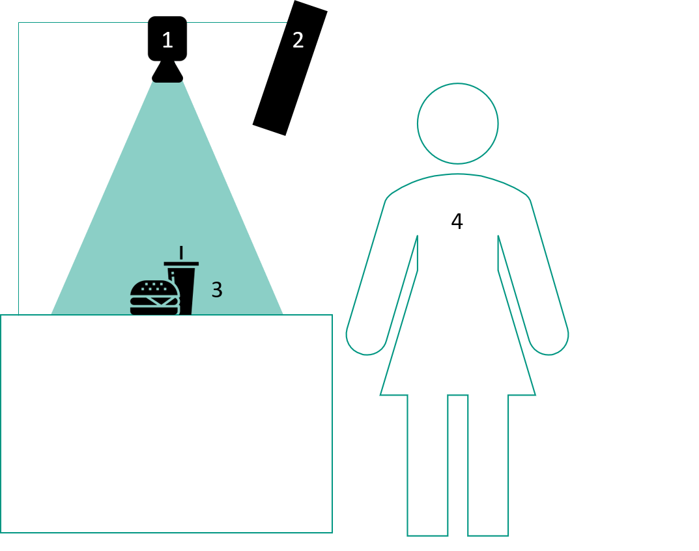

Quick Service Restaurant Order Assistant (QSROA) - Business Plan
Mission Statement
We, Christian, Felix, Julian, Joshua, Leon and Magnus are a group of students, all with a fascination in machine learning and a willingness not only to learn about ML techniques but also to "get our hands dirty" and use our theoretical knowledge and expand it practically. As participants of the AISS-CV (Artificial Intelligence in Service Systems - Computer Vision) course, we had the task to invent a Computer Vision service solution deployable on a "Jetson Nano". Put another way, we had to develop a service running on a computer attached to a camera that detects objects in real-time with the help of a neural network. Quickly we realized that our invention could be a game-changer for our potential customer market. In the following analysis, we will elaborate on this.
Our overall goal is to create profit for our customers as well as for their customers - or to say in a prosaic way "make our customers happy by making their customers happy".
Breaking down our overall goal to a more fine-granular level, we will examine the service we provide, the primary market where the most profit with our service can be made and, where for now our geographical region of operations will be.
We invented an AI-order-assistant for Quick Service Restaurants to check the completeness of an order.
Incorrect order composition is not only a major source of dissatisfaction for customers eating at the restaurant - especially in-home deliveries the damage done is significantly higher to both the restaurant and the customer.
On the customer's side, the level of frustration rises as the correction of the faulty delivery takes time. On the restaurant side, the company now not only has to deal with preparing the missing products - both an additional material and time expense, it additionally has to deliver those as quickly as possible to the customer, a rather costly process. Like that isn't enough, the damage done to the company's image grows with every minute the customer has to wait for her correct order.
With QSROA we intend to eliminate the occurrence of this inconvenient process once and for all!
In times where the market for food delivery is on the rise (Revenue Germany Food-Delivery 2020: 4.0 billion €, 2025: estimated 6.9 billion €), our solution can save restaurants from high costs.
At the moment, we see our solution mainly in the area of large quick service restaurant chains, as there is a maximum standardization of the menu (packaging) and we believe that we can "make our customers happy by making their customers happy" the fastest here.
As we constructed our service always trying to keep it as simple as possible - we believe we aren't restricted geographically, neither do we have to adapt much to geographically different market situations.
Business Description
Many quick-service restaurants, especially in the fast-food industry are facing a similar challenge - large amounts of orders hit employees with time being a limited and valuable factor. These orders can reach high levels of complexity and contain a vast variety of products. As a result, selecting and packing the right menu items (now simply called items) turns into a crucial and error-prone task that requires a constantly high level of focus.
Mistakes made typically result in costly fixes, a lowered customer satisfaction and reputation damages in the long run.
The Quick Service Restaurant Order Assistant (QSROA) developed in the course of this lecture, therefore, aims to help employees through the order handling process by verifying the status of the current order. In addition, the time-consuming process of frequently re-reading the order on receipts can be minimized and thus orders can be processed faster.
Using a camera surveying the packing area, the assistant continuously collates the detected items with the current order. QSROA thereby guides the employee not only towards missing items but also wrong ones and verifies the status of the order.
We as a group want to create value to the market by entering into collaborations with our business partners, not presenting them a fixed product, but rather adapt our service to their needs and overcome different chain-specific challenges in direct discourse. Our solution can be broken down into the following main parts:
-
Hardware:
- an edge device with an attached camera
-
Software:
-
real-time menu item detection running on the edge device
-
web-based interface collating detected items with the current order
-
-
Service:
-
software maintenance
-
updating network corresponding to seasonal menu-changes
-
future work: bottleneck detection - tracking how long it takes to produce certain menu items.
-
To get a better system overview, in the following a simplified representation of QSROA in the field of application is shown.

The system consists of three main parts. A camera module[1] and a monitor[2] connected to a Nvidia Jetson Nano, a packing area[3] and an employee[4] interacting with the QSROA.
Once a new order is placed in the system, the monitor displays its requested items to the employee. The job of the employee is now to collect the required items and place them in the packing area. The camera captures the items and sends the image to the Jetson Nano, where a custom-trained neural network is working to detect the items/objects in the image. The items are then transferred to the new status "checked off". As soon as all of the items have been detected, the order can be marked as complete and the employee may pack the ordered menu and proceed with the following menu request.
In conclusion, our system serves as an easy-to-implement, additional verification instance capable of significantly reducing costs caused by human failure in the processing of orders.
Deployment and Maintenance
One of the key features of the QSROA is that the whole system can be run on a single Jetson Nano. In order to put the system into use the customer essentially only needs to install the device and create a connection to a display as well as the customer's checkout system.
The establishment of a connection to the checkout system represents the most complex step in the deployment as it most likely requires a modification in the customer's system. However, as our customers are forecasted to be mostly large chains, a standardization and therefore simplification of this process can be expected.
The simplicity of the assistant continues in the dataset used for training the neural network. The training data largely/purely consists of synthetic data, thereby needing relatively few of it. This helps to provide a very convenient maintenance process as the model of the QSROA can be retrained easily and cost-effectively, again only needing few data. Thus, the assistant can react especially well to minor or seasonal changes in the restaurant's menu.
Impact for Potential QSROA-Customers
Potential customers range from large quick service restaurant chains to small company cafeterias. They all share the problem of occasionally trying to avoid employees having to perform monotonous work for long periods of time, which is often error-prone in the long run and can for example end up in packing orders that don't fulfill what the customer asked for.
This problem becomes even more severe in situations where orders cannot be fixed after leaving the kitchen, namely in food deliveries. The costs of faulty deliveries are significant. Not only do restaurants have to send out another delivery, but they may also lose the goodwill of the customer thereby potentially reducing future orders.
Especially the potential damage in reputation is not to be neglected. As a saying goes, "It takes years to build a positive image, but only five minutes to ruin it". With our new assistant, QSROA customers can take another step towards preserving their hard-earned reputation by further minimizing situations that may cause customer dissatisfaction.
Monotonous work not only dissatisfies employees and as a result motivates them to look for new job opportunities, but also can negatively impact mental health (Judy Willis 2014) and lead to error-prone work performances. Since it is in the interest of a company to avoid employees dropping out for an unpredictable time, it is important to restrict monotonous workflows.
By implementing the QSROA into a kitchen workflow, it is also possible to document event-logs/timestamps of the ordered items when they are ready for packing. With process-mining techniques, it is then possible to detect and visualize bottlenecks in the kitchen workflow and further optimize the process to reduce the overall menu delivery time.
SWOT Analysis
Strengths:
-
agile development-team
-
simple solution
-
relatively easy to large scale our service (country-wide)
Weaknesses:
-
Little knowledge in quick-order restaurant domain
-
No full-time development (students)
Opportunities:
- Growing food-delivery market
Threats:
- High pressure due to easy replaceability in early-stage development (less domain knowledge)
Industry Background
Quick service restaurants (QSR)-Industry:
There are many different quick service restaurant brands like Burger King, McDonald's, Starbucks, Taco Bell, etc.. In the U.S. alone, this industry generated revenue of 239 billion U.S. dollars in 2020 (S. Lock (2020)). The Food-Delivery-Industry on the other hand generated 28 billion U.S. dollars of revenue in the U.S. in 2020 (Statistica). For now we will not focus on limited service restaurants (LSR), because it is easier to large-scale our solution for standardized restaurant-chains. As the markets for QSR and food deliveries are growing constantly not only in the U.S. but also worldwide, it is essential to build an easy-to-implement solution to serve this growing market.
Computer Vision Research:
Since we expect further growth in the field of computer vision, we can also expect more advanced techniques to improve our service.

Competitor Analysis
Our biggest competitor is probably auvisus but they for now have a different scope - they focus on canteens, not on QSR chains. Therefore, we will not have any problems since we operate in different markets.
Market Analysis
In the early stages, our product exclusively targets large QSR chains. Their rare menu changes as well as internally motivated high product recognizability allows for a large-scale deployment with a low need for individualization.
We reckon with a sales potential of over 1.000 devices within the first three years, as BurgerKing and McDonalds already operate over 57.000 restaurants worldwide. Since our product is barely affected by regional factors, we believe that every single one of the restaurants could potentially be equipped with one or more QSROAs, depending on their size. In addition, with the turnover in food deliveries presumably doubling between 2019 and 2025 (Online Food Delivery - worldwide), the need for accurate delivery processes and assisting technologies will increase even further.
While focusing at first on the large QSR companies comes with several advantages, it also connects QSROA to the problems of "classic" QSR chains, namely the shifting perspective of customers towards healthier and more eco-friendly products. However, as the demand for fast food itself does not decrease, we see ourselves very much in the position to extend our target audience after the initial phase to new emerging QSR companies.
Outlook
While the QSROA can be a value-adding instrument in its initial use already, there are potential further scenarios in which the QSROA may deliver value to customers.
With the integration of the QSROA into a kitchen workflow, it is possible to document the event logs/timestamps of ordered items once they are placed in the scope of the QSROA and ready for packing. With the time tracking our customers have the ability to use process mining tools to detect bottlenecks and improve their kitchen processes to reduce the overall menu delivery time.
The most prominent use case appears to be in a self-serving environment. Essentially, the QSROA could be used as a verifying instance to check whether customers pick the products they paid for. In an even more advanced version, the customer's bill would be based upon the products the customer picked and the QSROA detected. In both scenarios the need for employees would significantly decrease, hence increasing our customer's competitiveness in the market through reduced costs and increased customer satisfaction.